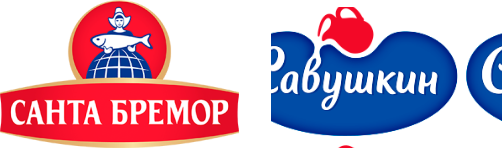
Международный автомобильный холдинг „Атлант-М“ торгует 10 автомобильными марками, в том числе Volkswagen. Для данного бренда нужно было разработать конструктор автомобилей по образцу немецкого проекта.
Разработка промо-проектов
Задачей проектов являлась разработка в короткие сроки (менее двух недель) различных промо-проектов
Основной объем работы был проделан в After Effects командой профессиональных аниматоров и иллюстраторов. Были собраны прототипы и отрисованы иллюстарции, которые после правок и согласования были интегрированы в основной проект.
Планируем архитектуру проекта
Разработка открытки планировалась в двух языковых версиях с возможностью отправки письма с поздравлением на двух языках
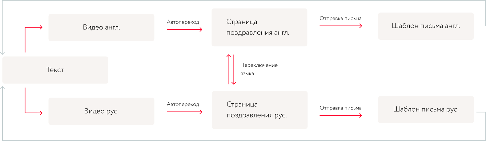
Планируем дорожную карту
Проект объемный, поэтому работа велась по водопадной модели. Первичный план, без этапов согласования и правок, содержал 7 этапов. Примерная разбивка этапов была такой:
1-й этап
Подготовка прототипов и технического задания
2-й этап
Разработка макетов страниц и письма рассылки
3-й этап
Подготовка видео с поздравлениями
4-й этап
HTML верстка макетов страниц
5-й этап
Программная реализация
6-й этап
Перенос открытки на сервер заказчика
7-й этап
Настройка и оптимизация рассылки на сервере заказчика
Готовим макеты
Дизайн разрабатывался на основании ключевого визуала и подгонялся в соответствии с разработанным видео. Основная задача заключалась в сохранении плавности перехода от видео к шаблону дизайна
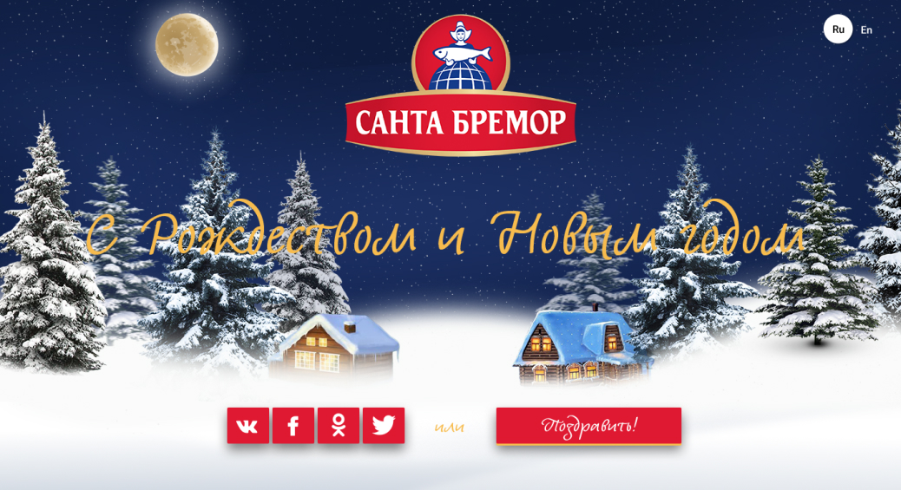
Для того чтобы письмо, отправленное на почту выглядело в соответствии с открыткой был подготовлен, нарезан и заверстан шаблон письма дял рассылки.
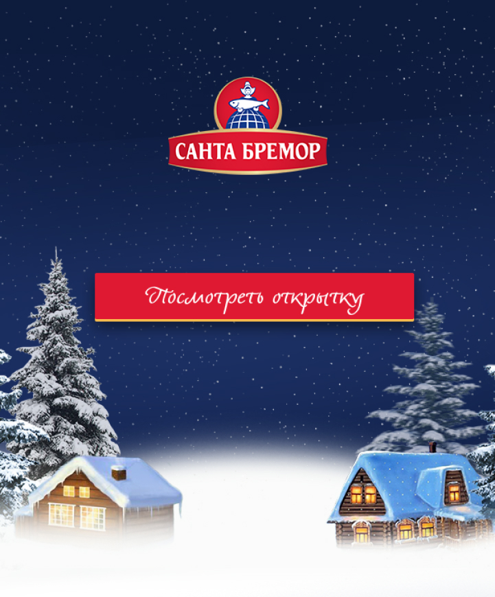
Картинка для шеринга в соцсети также готвоилась в соответствии с общей концепцией.
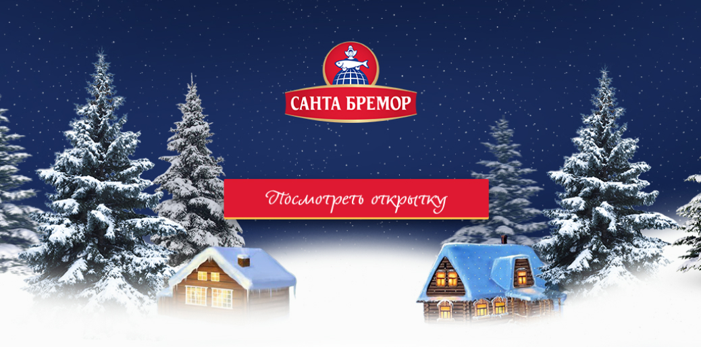
Подготовка видео
Дизайн разрабатывался на основании ключевого визуала и подгонялся в соответствии с разработанным видео. Основная задача заключалась в сохранении плавности перехода от видео к шаблону дизайна
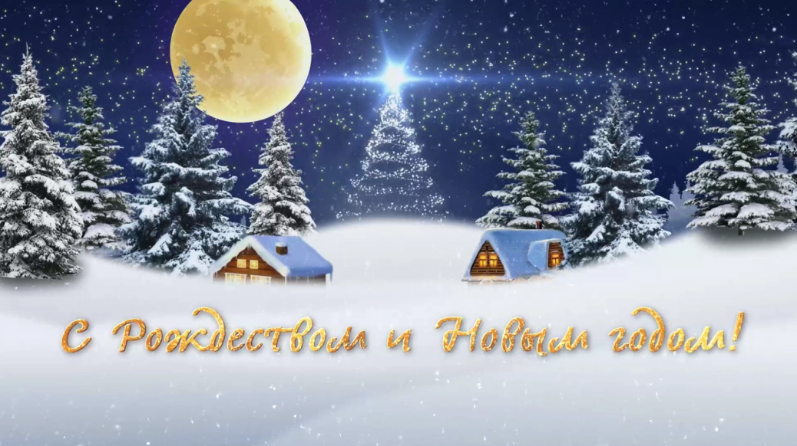
Мы подготовили поэкранный сценарий
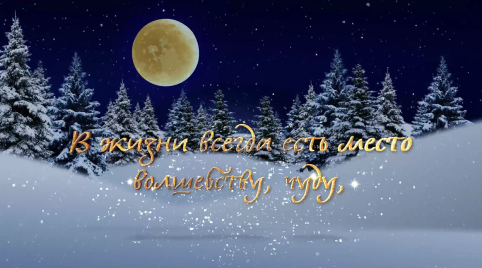
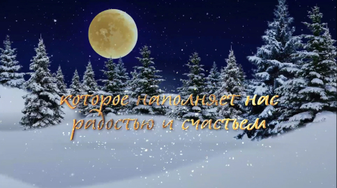
После сборки видео мы добавили
аудиодорожку. Результат ниже:
аудиодорожку. Результат ниже:
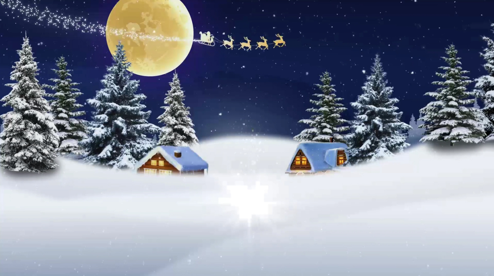
Другие открытки
Подобные проекты мы делаем с 2018 года, за это время мы разработали 5 новогодних открыток
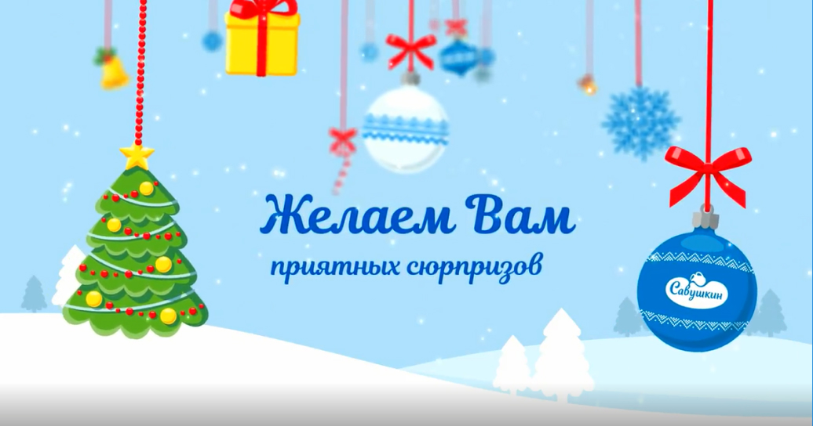
Открытка подготовлена к Новому году 2019
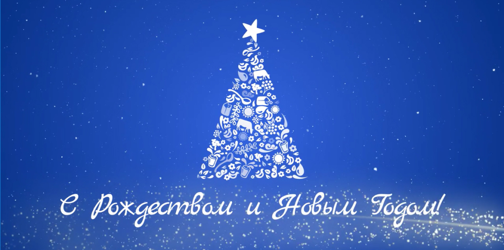
Новогодняя открытка 2020
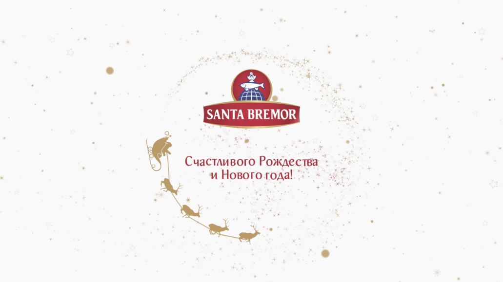
Промо-сайт фестиваля «Облака молока»
Еще один из срочных проектов это сайт ежегодного фестиваля «Облака молока», который проводится каждое лето в Бресте
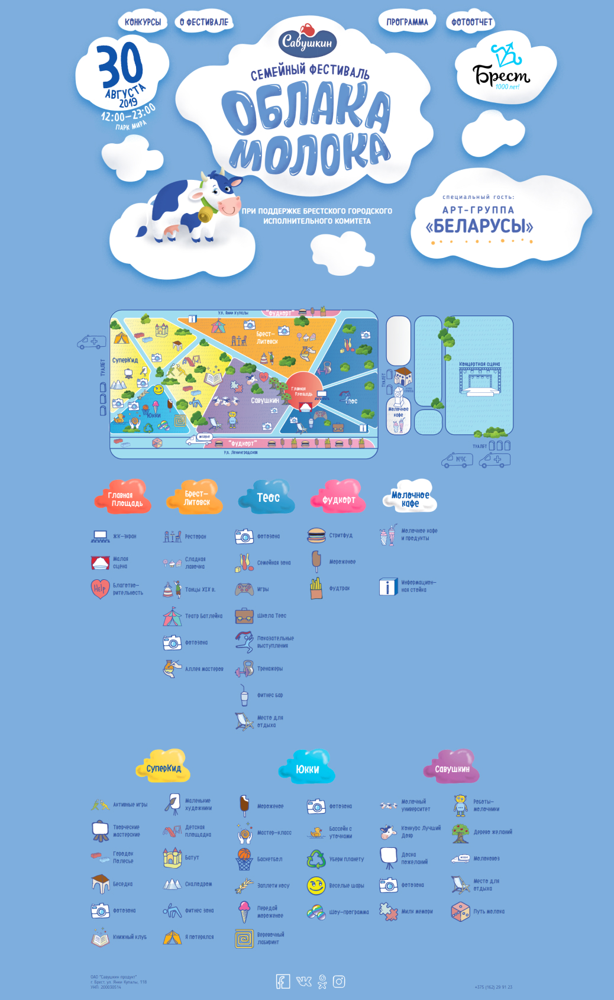
Отзыв клиента

Команда проекта
Руководитель проекта
Павел Бокач
Дизайн, UX
Сергей Шишпор
Дмитрий Хоружко
Команда клиента
Светлана Яцук
Жанна Селина
Ведущий разработчик
Игорь Билиба
Егор Шевчик
Верстка
Павел Кряквин